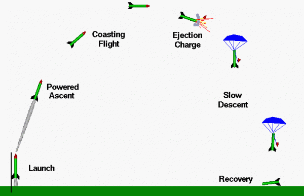

Preparar la jornada con el cohete terminado
Relacionar el objeto, el archivo y las comprobaciones pendientes antes de la revisión del responsable.
La revisión comienza con el objeto que existe
Antes de la jornada, cada equipo reúne el cohete, la revisión final del archivo, el plano y el registro de montaje. Una modificación posterior al taller debe aparecer en los documentos. Si se cambió una nariz o una aleta, el expediente anterior deja de describir por completo el objeto actual.
Tres referencias que deben corresponder
| Referencia | Qué contiene |
|---|---|
| Objeto | Piezas y estado final |
| Archivo | Geometría, masas y configuración |
| Registro | Comprobaciones y cambios |
La preparación no consiste en llenar casillas sin mirar las piezas. Cada condición debe poder mostrarse. El docente revisa el sistema comercial, la recuperación, la configuración y los pendientes. El responsable de operaciones determina la aceptación y las condiciones de la actividad.
Preparar una jornada consiste en conectar el estado del objeto con un expediente vigente y con el trabajo de las personas. El equipo debe poder mostrar cuál es su revisión, qué comprobaciones realizó y qué queda pendiente. Una ficha marcada antes de cambiar una pieza puede haber perdido parte de su valor. La revisión previa identifica esas relaciones y permite al responsable decidir con información sobre el conjunto que realmente se presenta.
Una lista de revisión que se pueda demostrar
Revisión del equipo
| Punto | Evidencia concreta |
|---|---|
| Identificación | Nombre de equipo y revisión |
| Piezas y alineación | Vistas y observación actual |
| Masas y dimensiones | Registro de la condición medida |
| Recuperación | Comprobación de banco correspondiente |
| Conjunto comercial | Referencia e instrucciones |
| Pendientes | Corrección y revisión posterior |
El estado “pendiente” debe conservarse cuando falta información. Marcar todo como terminado para que el expediente se vea bien impide organizar la jornada. Si una condición importante no se puede cerrar, el equipo participa en la observación y el análisis de los otros proyectos mientras resuelve su caso.
Un cambio pequeño que importa
El equipo sustituyó una pieza después de la última simulación, pero afirma que se parece mucho.
Razonamiento del caso
Compara referencia, masa, geometría y función. Actualiza lo que corresponda y repite las comprobaciones afectadas. La similitud visual no demuestra equivalencia.
No es necesario convertir la revisión en una matriz estadística avanzada. Basta identificar el objeto, la pregunta, la evidencia y quién revisa el resultado.
Una condición cerrada con una revisión anterior puede volver a abrirse después de un cambio. No se trata de repetir todo por rutina, sino de identificar qué función se afectó. Cambiar una pieza de cierre puede afectar acceso y recuperación; cambiar una aleta puede afectar geometría y masa. El equipo explica esa relación y el docente decide las comprobaciones que corresponden a la nueva configuración.
Una lista de revisión es útil cuando cada punto pide una evidencia o una comprobación observable. “Todo correcto” no describe qué se examinó. Es preferible identificar componente, condición y responsable de la revisión. El registro permite que otro compañero entienda la situación y evita depender de la memoria de una sola persona. La explicación se hace con el cohete y el archivo delante para relacionar las palabras con referencias físicas.
Organizar responsabilidades
En una jornada hay actividades de operación, observación y recuperación. No todos los participantes manipulan el conjunto al mismo tiempo. El equipo docente establece las funciones y los límites de intervención. Cada grupo de alumnos puede asignar responsable de expediente, observación, registro audiovisual y análisis de datos.
Roles de aprendizaje
| Rol | Responsabilidad |
|---|---|
| Expediente | Conservar la configuración y registrar cambios |
| Observación | Anotar eventos reconocibles |
| Imagen | Registrar con referencias útiles |
| Datos | Relacionar archivos y preguntas |
| Portavoz | Explicar el estado del proyecto |
Las funciones de responsable de campo, operación del sistema de lanzamiento y aceptación del vehículo corresponden a quienes haya designado la organización. La operación utiliza equipos comerciales y procedimientos revisados. Esta clase prepara al alumno para colaborar y observar de forma ordenada.
Todo el equipo quiere grabar
Nadie anotó qué revisión del cohete se utilizó ni qué archivo estaba asociado.
Razonamiento del caso
La grabación pierde contexto. Antes de la actividad se asigna quién conserva configuración y referencias, de modo que imagen y datos se puedan relacionar después.
Preparar observaciones que después sirvan

- Escribe la identificación del modelo y su configuración de referencia.
- Define qué eventos reconocerá el observador: salida, subida, recuperación visible y contacto con el suelo cuando sea observable.
- Declara el origen de tiempo de la grabación o del registro.
- Anota qué magnitudes se podrán medir y cuáles solo describir cualitativamente.
- Prepara espacio para un evento no observado o una interrupción del registro.
Una observación visual puede describir una fase sin medir una altura. No se convierte una impresión del espectador en un número exacto de metros. El demostrador docente con CanSat tiene otra fuente de datos y otro expediente.
El plan de observación se prepara antes del evento porque después no se puede recuperar lo que nadie registró. Cada dato necesita una fuente posible. Una grabación puede permitir identificar la secuencia general, pero no convierte automáticamente la imagen en una medida de altura. Un sensor requiere su propia referencia y unidades. La tarea del alumno es reconocer qué podrá observar de forma defendible y dejar abiertas las variables que no cuenten con un método.
La jornada también necesita alternativas
Alternativas previstas
| Situación | Decisión de organización | Aprendizaje posible |
|---|---|---|
| Condición de campo no aceptada | Adaptar o aplazar operaciones | Revisar predicciones y registros de banco |
| Pendiente del vehículo | Conservar la revisión abierta | Observar y comparar otros proyectos |
| Falta de un registro | Identificar el dato ausente | Mejorar la pauta de observación |
Planificar antes de salir
Las condiciones de la jornada no permiten realizar todas las operaciones previstas o un modelo conserva un pendiente.
Razonamiento del caso
La organización adapta o aplaza operaciones según la revisión del responsable. Los equipos pueden revisar datos de banco, observar otros casos, comparar configuraciones y documentar lo que faltó. No se presenta una actividad no realizada como un lanzamiento exitoso.
La agenda reserva tiempo para revisión, desplazamientos organizados, pausas y análisis. El día completo no es una secuencia ininterrumpida de lanzamientos. Si el curso quiere enseñar a construir de forma responsable, también debe enseñar a conservar una decisión de aplazamiento y su motivo.
- Revisa que las piezas y archivos tengan copia y transporte identificado.
- Prepara fichas, cámara y medios de registro necesarios para la función del equipo.
- Confirma los horarios y la organización de campo con el docente.
- Comprueba qué se hará si el proyecto no puede operar en la ventana prevista.
- Conserva una lista de pendientes que todavía requiera cierre.
El plan alternativo evita que un equipo pierda la jornada si su prototipo no puede operar. Puede encargarse de documentar una revisión, contrastar la configuración de un caso observado o analizar registros del demostrador. Ese trabajo debe conservar una pregunta y una evidencia. Participar como observador no se presenta como haber ejecutado la operación del vehículo propio.
Explicar el estado en dos minutos
Cada equipo prepara una explicación corta con el objeto delante: qué construyó, por qué eligió nariz y aletas, qué comprobó y qué falta. El docente puede pedir una medida o abrir una entrada del archivo para contrastar la respuesta. La defensa se apoya en el proyecto, no en memorizar fórmulas.
Presentación previa a la jornada
| Pregunta | Apoyo que debe mostrarse |
|---|---|
| ¿Qué misión tiene? | Criterios de selección |
| ¿Por qué esas piezas? | Comparativas y fabricación |
| ¿Qué representa el archivo? | Configuración y masas |
| ¿Qué comprobamos? | Fotos y fichas de banco |
| ¿Qué sigue pendiente? | Acción y revisión |
Qué llevar como conclusión
“Este es el estado revisado de nuestro prototipo. Estas son las comprobaciones hechas y estos los cambios posteriores al taller”.
Razonamiento del caso
La organización puede tomar decisiones con información concreta. Una carpeta llena de archivos sin esa relación no cumple la misma función.
Entrega el expediente previo y la hoja de observación. El último encuentro utilizará esos documentos para que las experiencias de campo puedan convertirse en aprendizaje y mejoras.
Preguntas de cierre
¿Un resultado de simulación autoriza la operación?
No. La aceptación y las condiciones corresponden al responsable.
¿Una impresión visual da una altura exacta?
No. Hay que distinguir observación y medición.
¿Qué hacer si el modelo conserva un pendiente?
Documentarlo, resolverlo con el docente y participar según la organización.
Entrega
Expediente previo, roles y hoja de observación.
Bibliografía y procedencia
[NAR] National Association of Rocketry. Model Rocket Safety Code.
[OR3] OpenRocket. Advanced Flight Simulation.
[FL] NASA Glenn. Flight of a Model Rocket.